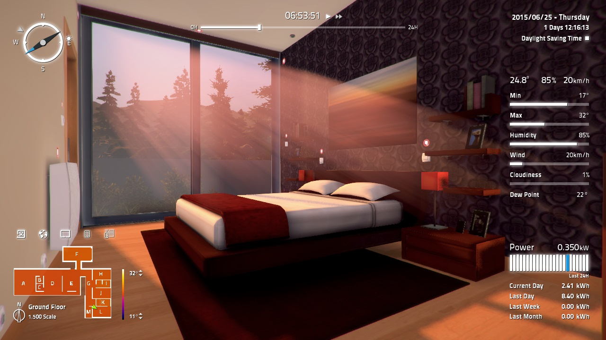

<div class="container-fluid d-flex">
  <mat-tab-group animationDuration="0ms" [backgroundColor]="'primary'">
    <mat-tab label="Screenshot">
      
    </mat-tab>
    <mat-tab label="Opis">
      <div class="content">
        <p>
          Home I/O jest symulatorem 3D inteligentnego domu który powstał na
          potrzeby edukacji i kształcenia w dziedzinach STEM (ang. science,
          technology, engineering, mathematics).
        </p>
        <p><u>Możliwości programu:</u></p>
        <ul>
          <li class="bi bi-lightbulb">174 urządzenia sterowalne;</li>
          <li class="bi bi-sliders2">cyfrowe i analogowe I/O;</li>
          <li class="bi bi-battery-half">
            zbiorczy monitoring zużycia energii przez aktywne urządzenia w ciągu
            ostatniej godziny/dnia/tygodnia/miesiąca;
          </li>
          <li class="bi bi-thermometer-half">
            symulacja warunków termicznych w czasie rzeczywistym z
            uwzględnieniem pogody, lokalizacji i pory doby;
          </li>
          <li class="bi bi-stopwatch">
            kontrola nad przebiegiem czasu wewnątrz symulacji;
          </li>
          <li class="bi bi-cpu">
            możliwość integracji z różnymi technologiami automatyki (PLC,
            Modbus, mikrokontrolery);
          </li>
          <li class="bi bi-tablet">
            konsola Samrt Home Console dla tworzenia prostych warunków
            automatyzacji wewnątrz programu;
          </li>
          <li class="bi bi-window-fullscreen">
            dołączony program Connect I/O do zarządzania wartościami sygnałów,
            napisania prostej logiki i podłączenia zewnętrznych technologii;
          </li>
        </ul>
      </div>
    </mat-tab>
    <mat-tab label="Urządzenia">
      <table class="table">
        <thead>
          <tr>
            <th scope="col">Urządzenie</th>
            <th scope="col">ilość</th>
          </tr>
        </thead>
        <tbody>
          <tr *ngFor="let device of devices">
            <td>
              {{ device.type }}
            </td>
            <td>
              {{ device.amount }}
            </td>
          </tr>
        </tbody>
      </table>
    </mat-tab>
  </mat-tab-group>
</div>
